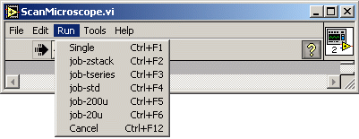
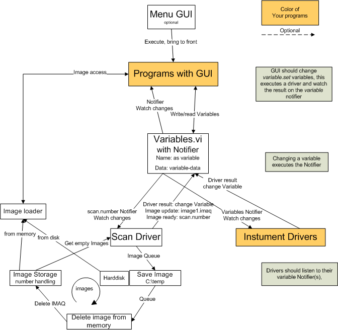

Documentation Labwiew Scanning Software "Colibri"
C.Seebacher
last change 12. september 2006
Seebacher@biz.uni-muenchen.de
www.lmu.de/~chr
ToDo: split this document: into using, features and bugs and
jobs.
Short instructions
Run the ScanMicroscope.vi. It is only a menu (like in ImageJ). This has
the advantage to test all features seperately. I heard
Max Spering has build a single GUI.

View
a screenshot
Tools - Imaq-view-save: select the channels to view.
Run - Single: Start a scan or press <Strg>F1 (better use the
Autohotkey tool)
optionally you can:
Edit - DefineScan: to change the scan
Edit - PMT gain: to change the high voltage, do not forget to put it to
0 at the end.
Tools - Maitai: Switch On/Off the laser, Change the wavelength,
Open/Close the shutter.
Run - job-zstack: This is a predefined z-stack. Change it with Tools -
ChangeJob or edit the job.ini file.
File - Save:
save the Images as MultiTIFF file (all temp images are in the c:/temp
directory), select 1 or more and press Save MultiTiff.
Workarounds
- Debug the iMicSDK: Tools - ViewVariable, select
imicsdk.handle="...", copy the number, use one of the VIs in
Bibliothek/iMicSDK with this handle.
- to really force a driver to stop, reinit etc..: open the vi, stop
it, start it again.
Features
Comes with complete source code.
Vector based scan description.
1 to 4 channels only limited by the AD-card.
support of the digital interface to the Smartmove boards (bidirectional
scanning with all speeds).
4 Mhz sampling speed (AD-card and computer dependent) with
variable binning n=1...65635 (slower than 15ms/pixel)
flexible scanspeeds from sub ms (40µs) to several s
(1000x15ms=15s) per line.
Arbitrary scan tracks
Spot scan (at the monent not tested)
Line scan (at the monent not tested)
Flexible Job control
Units are meter at the sample.
Contionous running (no gap between scans)
Some support of PCO CCD cameras.
Tested scan speeds
With 60x Objective, f=35mm scan lens
50x16µm, 512x16x 1µs, 0.00983s/frame=101,7Hz (21% turnloss)
contionous 200 images 1 chanal
10x10µm, 100x100pix 1µs, 0.02189s/frame =45,7Hz (120% turn
loss) continous 200 images
200x200µm, 2000x2000pix, 1µs, 4,24s (6%loss)
200x200µm, 4000x4000pix, 1µs, 16,32s/frame (2%loss)
contionous 5 images
4x4u, 16x16pixel, 0.00317s/frame=315Hz (25%loss) contious 40 images
16x16um, 64x64Pixel, 0,04475s/frame=22Hz (9%loss) contionous 400 images
(empty memory)
30x30µm, 100x100pix, 10µs 0,10595s/frame, 6% loss, 1000
contionous
Tested: 4µx4µ, 80x80 pixel with 6µs/pixel, 40ms/frame
100 frames continous
Tested: 4µx4µ, 80x80 pixel with 12µs/pixel,
78.7ms/frame 500 frames continous
Jobs
all active Jobs are in the \JobControl\job.ini (filename stored in the
variables) file
supported command and their .data are:
- scan, number of continous scans: execute scan(s).
- waitrel, time to wait in s. Time between the end of a scan and
the start of the next scan!
- waitabs, Timestamp seconds after 1980. It was like "2.12.2004
12:05:30,1" before, but this was not good for math operations.
- piezorel, in m
- piezoabs, in m
- zrel, movement in m
- zabs, move to in m
- xrel, in m
- xabs, in m
- yrel, in m
- yabs, in m
- changescan, data of a valid scan. (You can do the same with the
"variable" command,
data="scan:scandata...")
- loadscan, filename of tif? (not implemented)
- loopstart, number of loops: this number will be decreased to 0,
if you nest loops add a variable command with data="job.?.data:123"
before!
- looprepeat, positon-index of loopstart, first command has an
index of 1,
jumps there if the number at this position is not 0.
- end, ingnored: End of the job
- variable, data="name:value": Universal command, use ":" because
=" is not allowed
in inside the variable; Or is it now?
- event, name of variable: Universal event: user event system
is discontinued. Use the variable instead
- newexperiment, ignored: the current experiment name will be
counted up.
- math, data="[target]:1+2*3-4+[job.1.data]-sin(5E2)*[stage.x]" use
":" because
=" is not allowed
in inside the variable. Or is it now?
- format,
data="[target]:z:/mydata/bio-goo_z[job.6.data;%02d]_t[scan.number;%02d].tif"
to format numbers into a new string (so far not implemented?)
- createnotifier, data: variable to watch at. e.g
stage.piezo, scan.number
- deletenotifier, data: ignore. So far there is only one notifier
you can
listen to. i am not sure if you have to/should delete it. Define a new
one!
- waitfornotifier, data: timeout [s] (negative=no timeout, default
5s), ignore previous (true,false) default false.
- if, data: variable, <,>,eq,neq, <> (= is not
allowed!), value, position to jump to (not tested)
the respective lines of the jobs.ini are copied to the variables and an
event is executed on the job.position variable.
A job.#.command line is needed, a job.#.data line is often needed, a
job.#.name line is optional but not yet used
An example:
[job-zstack] same name as in the menu defined by GUI.ini
job.name="z-Stack 0.5µm"
job.position=0
job.position.driver=TJob.vi
job.1.command=newexperiment
job.2.command=piezorel
job.2.data=0
job.3.command=createnotifier
job.3.data=scan.number
job.4.command=loopstart
job.4.data="100 times"
job.5.command=scan
job.5.data="1"
job.6.command=waitfornotifier
job.6.data=20,false
job.7.command=piezorel
job.7.data=+5E-7
job.8.command=looprepeat
job.8.data="4 (# of loopstart)"
job.9.command=deletenotifier
job.10.command=newexperiment
job.11.command=end
It is also possible to write a totally different Job.vi that starts
events
etc...
To have the script 'program' in the data space is powerful but can be
dangerous as you have full control on all data.
I am thinking about counting down the number to 0. Them you can stop
the
job
easily. Now done with the special number="cancel".
Menu
the /GUI.ini file controlls all menu entries shortcuts and its
assoziated GUI-Programs.
These programms will be loaded at startup.
Upon actiavation the frontpanel will be opend, it is tried to send the
menu name to a String control named "Menu", and the vi is executed
without
wait.
Special names are: End, Cancel
[job-zstack] Adds a new menu item
parent="Run" Adds the new item under the parent "Run" (must be declared before!, "" is top level)
vi-path="JobControl\StartJobGUI.vi" Starts this Application
shortcut="F2" Uses this Shortcut: <STRG> F2 but this works only with the focus on the menu bar. Use Autohotkey to solve this!
You can use the Autohotkey program to have real single key control!
Internal structure

All changes by the User will change variables. This does automatically
send a Notifier with the name of the Variable. A driver listening to
the
Notifier will get the change and is doing the Instrument input output.
The result is sent back the same way via changing a vaiable. All
data is stored in the Varaibles.
Only the storage of
the images is separated from the variables due to
the lack of powerfull memory management, binary data and array
functions.
Programming
variables
all data should be stoted in the variables\variables.vi.
Though it is text based it is designed for scalar numbers. But some
variables are arrays or strings, so for simplicity i chose strings. The
conversion time from a string to a number is some µs (only for a
large arrays
there could be a speed problem).
If you add a existing variable you will actually overwrite it so take
care with your name definitions.
The "get all" function can point to a variable holding a space
separated
list of all variable tags to read. The output is
tag="Value"<cr>tag="value"... (<cr> is the new line byte:
\n); Data must not have a <cr> char.
My drivers expect a new value for a variable in a separate variable who
has a name extended with .set
All other dots are (so far) not object oriented programming but used
for structure. One could build a tree with these dots.
examples:
variable1="123"
variable1.set="124"
drivers (new with Notifier, new without extra Driver Notifier)
(first i tried to do it with user events but could not create them in a
running program (dependent of the label of a front panel element!))
you can easily add you own instrument driver or exchange a existing
one..
It does not need a special connector any more,
It does not need to run very fast any more,
It can do work when it is not called.!
See Prototype "DriverTemplate.vi", or the more difficult TiMicSDK.vi
Normal work flow: change the abc.set variable.
This sends a Notifier named abc.set with the data of the variable.
The driver is listening to its apropriate Notifier(s).
When the Notification arrives the
driver is doing its job and at the end it changes the variable abc
(without .set) to
its new value. (whitch
automatically creates another Notification the a listening GUI).
Or you can call the driver direct (without Event via TimerLoop) by
creating a Notifier with the name of the driver.vi and sending a
notification with the .set data.
For an update request to the driver i send "update" as data instead of
the value.
Some driver do understand a "cancel" to stop the the driver from their
actual task.
GUI
GUIs should use an event loop (do not waste execution time by polling
user input) and close the frontpanel after execution. Simple example:
SetEventGUI.vi.
GUIs should watch te result of their changes by listening to the
respective (without the .set) Notifier of the Variables they changed.
IMAQs
There was a timimg problem if the save and get functions are included
within the IMAQ storage vi (blocked while saving).
There is still the idea of having a consecutive integer number for the
images.
Now you can get the IMAQ from a function called ImaqStorage.vi. With
"create IMAQ" you get a new IMAQ with "get IMAQ" you get an existing
IMAQ defined with its number. Be careful if the "getIMAQ" returns the
number "-1" you habe a valid IMAQ but not its data (deleted from
Memory).
Use the GetIMAQ.vi to obtain the IMAQ with its data reloaded from the
disk.
To save the IMAQ send the IMAQ with its metadata (cluster) into a queue
called "SaveQueue". There is SaveImaqFromQueue.vi running in the
background taking care for the storage.
The number of a "active Image" is now stored in the Variables as
imaq.active="12345". You can get the actualindex from ImaqStorage.vi if
you want the number of the latest image.
Take care if you get the actual IMAQ used for scanning (probably
the last images). Its data is changing during while scaning. Do
not change
anything what could change the pointer to the image-data (border,
imagesize etc). Read and copy etc. should be OK.
If the image is not older
than the buffersize (currently 200 IMAQs, defined by
DeleteImaqFromSavedQueue.vi) the getimaq.vi should
be very fast (RAM).
After each call with "getIMAQ" (or use the GetIMAQ.vi) you should call
a "decrease usage". Otherwise the internal delete function will never
free this image from the RAM.
Actual IMAQ
You can listen to the notifier for the image1.imaq variable if you want
to know when there is new data available. If you want to know when the
image is ready listen to the scan.number variable. This variable is
counting up each scan in a contionous run. In a single scan it is
changing once to 1. (how does a job now if a sequence is ready?)
With the notifier comes the number if the IMAQ; with this number you
get the image with the "GetIMAQ.vi".
Online analysis
nothing done so far, started with a histogram, add ROIs, use some IMAQ
tools..
To do list (important on top)
- have a finish frame (not only cancel with shutter close) for the
stacks.
- add z and t image conter and type of new image, not only number
of the
imaq!
- how to (better) submit new images ready, sequence ready...
- can Autohotkey give back the focus? Otherwise we want a tool to
watch the keyboard/ joystick/mouse?
- Polygonscan with offsets or only without offset? What tool to use
in the DefieScan? Uni/Bidirectional?
- change the imic-move buttons to tilted 45°
- Multi-ROI scan, problem if you want seperate IMAQs as 1 scan =1
image, but if one can place the data in one image (next to or below)
this could work.
- ROIs, !three levels:
(Stage(x,y,z,piezo),Scan-position(Scan),Imageparts(IMAQ)) (Z-stack
range?, time lapse??),
- separation of instrument-data vs. user-data (started with the
[mic] tag in the ini-file) but where to put new entries?
- Job-designer GUI (started but not really comfortable), Job
management (load/save/run)?
- fast EOM (there are TTL-Triggers on the digial Board:
Image-Trigger, Line-Turn-Trigger, but i need two voltages)
- online analysis of Scan, Imageparts e.g. Intensity-Graphs of ROIs
- Error Logsystem, logfile, getting more and more important.
Started with LogNotifier.vi
- Save as OME-XML, read OME-XML
- Save window-positions
- Drivers for other motors
Known Bugs (serious on top, sometimes not up to date; use svn/track
system)
- the ImaqStorage.vi slows down if there are many open IMAQs,
Creation of a new IMAQ is slowing down. I tested that Labview needs
0.5ms
to open a new 32x32 IMAQ (4MB/s), and 2ms for a 1000x1000 (1000MB/s).
But the 32x32 slows down to 8ms after 10000 open IMAQs (0.2MB/s). This
is a real draw back for fast and small images. Perhaps i need to open
some IMAQs in advance?. And the DeleteImaqFromSavedQueue.vi
uses lots of performance requesting the used space of all IMAQ.
- The sort function in ManageImagesGUI should not touch numbers
like z-focus, or sort it correct as number not as string?
- You can not see if a job is running. The Tjob.vi should open a
Status Window with a cancel button. Perhaps you can watch the
z-position moving or open the TimerLoop.vi for waiting Events. Or open
a Notifier on the job.position variable!
- The scan-definition is dependent on the (fixed) galvo update rate
and AD-rate. Re-use is only possible with the same update rates. (if
you change the instrumentation or share the files with a
different instrument...). Only help would be a clever converter
tool, but who really needs this?
Fixed Bugs
- If you change the Drawing tool in Define_scan (e.g polygon to box
and back to polygon) you loose the coordinates of this drawing tool.
Import from a scan is always done to a horizontal box!! If you draw a
complicated polygon do not switch the tool. solved (1.2005) with import
of polygon.
- Cancel does not stop a running TJob.vi driver. (set loop to 0 or
job.position to the end or restart the driver or have a GUI?..) fixed
(1.2006): now you can send job.position="cancel".
- binningdll: the division with binning did not conserve tailing
bits (fixed 31.10.2005)
- Timerloop had problems with wait: minimal wait (NextTimeout) is
now 1ms!? (fixed 14.10.2005)
- ScanSteuerung_to_Datapoints had a incompatible command order: now
data of increment commands appear in the next datapoint!
- ScanSteuerungToDatapoints crashed if there was no command
- There was 1 empty line too much in the image (the last loop
should not
start a new line)
- IMAQ-Management is more reliable
- To change the number of channels is possible with the
IMAQ-view-save menu.
- Sometimes a Job is stopped. This is fixed with a wait time of e.g
50 ms of scan.done.event. And a change in the 2PhotonImaging_imaq.vi
(fire event after save).
- Only one loop is possible. Can not rerun the loop! If you nest
loops add a "variable" command with data="job.?.data:123" before to
reset the loopcounter.
- Analoggalvo with 10µs, 4MHz does not work properly?
(Schräg? not reproduceable): (fixed 11.2005)Changed the
dataresolution to 48bit in the digital galvo DSP.
- The unidirectional scan has bugs: sometimes the lines are shifted
due to rounding errors, the DSP expects 24bit integers. There should be
use of a move relative command not (only?) increment moves. Or better:
estimation and correction of the rounding error as this may affect also
slow and small bidiretional scans. Or there is a bug in
UmkehrenZuScanSteuerung.vi as bidirectional is working fine and here
there is a difference as the PixelX is not 0!. (fixed 11.2005): Changed
the dataresolution to 48bit in the digital galvo DSP.
- In an polyline-scan points are normally out of sync with the
galvo (then drawing is not equal scan) especially in the bidirectional
modus forward and back are then not equal tracks. To fix this I would
have to calculate new in sync Galvo points along the path.: (fixed
11.2005)
move each point to a Galvosync but now of course the speed is not equal
any more.
- After microscope inizializsation the positions do not correspond
to the variables: Missing init of each variable/driver or: fire each
Event once at startup? (fixed 11.2005) Job of good driver programming.
Now the driver is started at startup so it can initialize the variables.
- The event loop stops if you select a menu item (don't know how to
solve it, seems to be a Labview problem) But disappeared suddenly!!!!
- there is a program that does not decrease the IMAQ counter after
a get image, so the delete function does not know whitch image to
delete...(fix in ManageImagesGUI 11.1005)
- the first piezoabs (to start) in a zstack does not work? (~fixed
problem of too fast Jobs and the next piezorel reads the stage.piezo
position before ist was changed, fix it with a wait on notifier
for stage.piezo)
- The ManageImagesGUI is missing the last image! (fixed 29.11.2005)
- The digital galvo DSP is limited to times of some hunded
seconds (problem in the continous mode). Overflow of the internal
timer (Fixed in 1.5beta5)
- !The analog galvo version can crash Windows! Not really
reproduceable but for sure! Error in the NImax Drivers? Seems to work
now. (Fixed 2.2.2006 possible overflow in the binning DLL). The NImax
Analog out
driver does not like to reuse the task. One has to clear! and reinit it
to change the datasize!?
- If you cancel (cleares all events) maybe there is a vi running
which
initiates a new event (typical wait functionality). Especially the wait
function in the TJob.vi driver!. Solved for TJob with the ="cancel" but
not for other drivers. ('fixed' with a cancel system looking to
cancel.tags waht to do)
- Only drivers loaded during the startup are working. If you add a
new driver while running it is not loaded! (not strictly true any more
as you could create a new Notifier... while running, only the old
Event-system does not know of it? (obsolete with the new Notifier
drivers)
- The New IMAQ Version (3.5?/9?) needs x-width multiple to 16;
otherwise there are alingment-pixel at the border which are not
supported so far, before it was a multiple of 4 (fixed? in DefineScan
6.2006).
- Building the tree in the save window is very slow. Is a
labview problem. But there is a workaround. Fixed 7.2006
- The zstackGUI does not recalculate the slices if you read a new
position. (fixed 8.2006 with update in a timeout)
- (ToDo) Tool to save Arrays in the Variables or better support of
the
.tags variables. Konsistent: space or , as seperator?! Now everything
uses ","!
- the preview window has not tilte: metadata is not yet available.
Was fixed some time ago.
- Some image-widths can not be used e.g. 50 (must be a multiple of
4!) (these IMAQs have hidden boarders) (requires a difficult change of
the
binning.dll or the index of the Pixels,) now (new IMAQ-version? the
problem is a multipe of 16! Fixed only in in Define_Scan to restrict to
multiple of 16. Fixed 1.2007, now there is no restriction any more
Outlook
with programmable keys, the mouse, the mouse wheel or a external
turnkeys one can tune any parameter (stage, amplifier, scanspeed?,
focus, laserpower)
Use of the IMAQ image recognition/manipulation features.
Tuning
Take galvo-sensor-signal (pin2 signal and pin6 ground on the white
Smartmove connector next to Power) connected into AnalogIn.
Try some delays with bidirectional scanning (there should not
be any stripes in the image).
Save the delay in the mic.ini
Due to a delay of the signal in the Analog Detection (Ampifier?, PMT?)
the real imaging needs a little bit extra delay.
Error Codes
-200284 (DAQmx Read) AI-Start trigger is missing: check contact and
cables of Clock and Trigger!